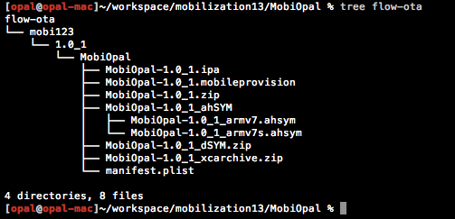

Co można wydusić z
xcode'a torturami?
Maciej Opała
Tytułem wstępu:
- Apphance Flow
- Continuous Integration dla aplikacji mobilnych
- Wsparcie zarówno dla iOS'a jak i Androida
- Automatyczna integracja z Apphancem
- Budowanie wielu wariantów, wykonywanie testów, statyczna analiza kodu, etc.
Apphance Flow, a iOS
- ipa
- mobileprovision
- source zip
- ahSYM
- dSYM zip
- xcarchive zip
- manifest

Build action
- dużo 'zgadywania'
- jaka struktura katalogu 'build'?
- jakie sdk? jaka konfiguracja?
- nie dostarcza najważniejszego artefaktu
Archive action
- xcarchive stanowi wartość dodaną - App Store
- reszta artefaktów - na podstawie xcarchive
- finalny produkt - na pewno dostaniemy to samo co klient
Tortury
- jak dotrzeć do xcarchive'a?
- jak znaleźć odpowiedni plik *.app?
- jak znaleźć odpowiedni folder dSYM?
- scheme?
- target?
- configuration?
- plist?
Archive - Post Action
xcodebuild -scheme <name> clean archive
<PostActions>
<ExecutionAction
ActionType = "Xcode.IDEStandardExecutionActionsCore.ExecutionActionType.ShellScriptAction">
<ActionContent
title = "Run Script"
scriptText = "echo CI_ARCHIVE_PATH="$ARCHIVE_PATH"">
</ActionContent>
</ExecutionAction>
</PostActions>
dSYMs && *.app && other
scheme:
<name>.xcscheme - shared
names:
xcodebuild -target <target> -configuration <configuration> -showBuildSettings
target:
xcscheme -> BuildAction -> BlueprintIdentifier + pbxproj
configuration:
xcscheme -> BuildConfiguration
plist:
configuration + pbxjproj